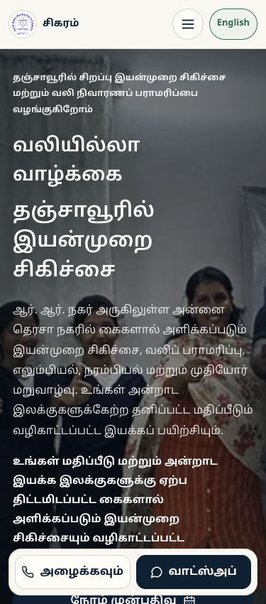
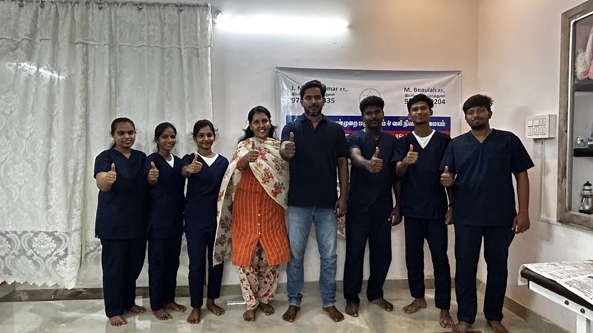

The starting point: a ₹2,500 website.
Our first website build gave Sigaram a public home for its services, team and appointment enquiries for ₹2,500. The SEO/GEO setup and later Tamil-language work were separate follow-up phases. The original website fee is shown here as project history, not as a price for the whole engagement.
The enquiry flow stayed familiar. Visitors prepare their details on the website, review the message in WhatsApp and send it themselves. Appointment confirmation remains with the clinic. Recruitment has its own route, so a job application does not get mixed into an appointment enquiry.
Start with the questions patients actually ask.
Someone looking for help after surgery needs different information from a caregiver researching rehabilitation for an older adult. A single general introduction could not explain every service with the same clarity.
We reviewed the clinic’s existing search information, local competitor pages and a saved set of AI discovery answers. That gave the work a concrete brief: improve service detail, make the clinic’s identity consistent and give visitors a clear next step. A chatbot’s confident answer was a research lead to verify, rather than a result to take on trust.
Give each service a useful destination.
We added four dedicated service pages and a linked guide to choosing a physiotherapist in Thanjavur. The pages explain the relevant care and enquiry process using the clinic’s confirmed information. They are linked from the website, with their core content available in the initial HTML.
- Orthopaedic and post-surgery rehabilitation
- A destination for visitors researching musculoskeletal care and recovery after surgery.
- Neurological and stroke rehabilitation
- Information organised for patients and caregivers researching neurological rehabilitation.
- Geriatric physiotherapy
- A dedicated explanation of care for older adults and everyday movement goals.
- Pain physiotherapy
- Clear service information for visitors researching pain and movement concerns.
Make the technical foundations dependable.
The follow-up covered page-specific titles and descriptions, preferred URLs, connected clinic and service structured data, crawlable links, robots.txt and the sitemap. The permanent Google verification file was retained. Redirects lead alternate URL versions to the preferred pages, and missing pages return a real 404.
Existing clinic photography was preserved and delivered in responsive WebP versions. The emphasis was on making the actual clinic information easier to access, rather than adding unsupported medical credentials or treatment promises.
Keep the website and Google profile aligned.
We reviewed categories, clinic details, hours, the description and the website link in Google Business Profile. All 32 primary-category service descriptions were reviewed, populated where needed and reopened to check the saved text.
The handover recorded one published profile update and 16 further updates saved on an eight-week schedule. Those scheduled items were checked for their copy, dates and destination links. A saved schedule is a publishing plan; future publication remains under Google’s control.
Profile saves and platform approval were tracked separately. The dated handover identified phone approval and complete public service-description rendering as follow-up, rather than marking them finished just because an editor accepted a change.
The same website. In the language people use.
The next phase added a visible Tamil switch. One click changes the website’s navigation, service copy, forms, privacy text and page information into Tamil, with an English button to switch back. The choice persists between pages and refreshes.
The recorded checks covered the service routes, careers, privacy, error page and mobile layouts. A later clinic blog was also published in English and Tamil. This makes language choice part of the website journey, rather than an isolated translated paragraph.

Measure the next step, not just a page view.
We configured GA4 with visitor choice and privacy controls, then verified page-view, WhatsApp, directions and call-intent events. Names, enquiry details and message content are excluded from those analytics events.
The contact checks verified event delivery. They did not place a connected call or send a patient message. A WhatsApp click or a call-button click is useful evidence of intent, but it is not a confirmed appointment.
A documented setup, with evidence behind it.
On 9 November 2026, the handover recorded individual Google URL inspections confirming that all eight sitemap pages from that phase were indexed. The later bilingual blog is separate from that eight-page checkpoint. This is a dated indexing observation, not a claim that all future content will rank.
The client received a readable before-and-after report, a tracking workbook, the content schedule and a dated evidence handover. Search and AI observations were kept as baselines. We did not turn early impressions or a small set of AI answers into a ranking-growth claim.
The result is a more complete local-search foundation: specific service destinations, clearer business information, a familiar enquiry flow and a website available in English and Tamil. Later rankings, citations and booked appointments still need to be measured over comparable periods.
